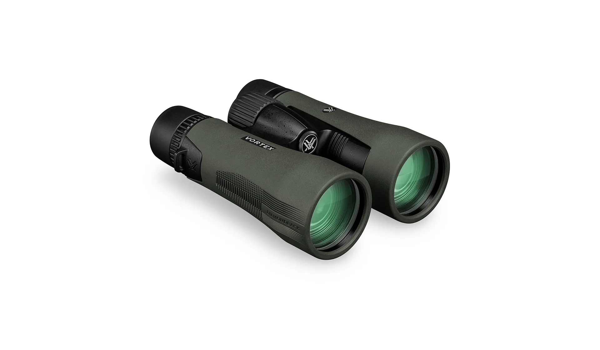
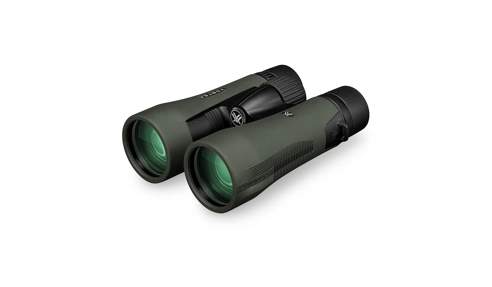
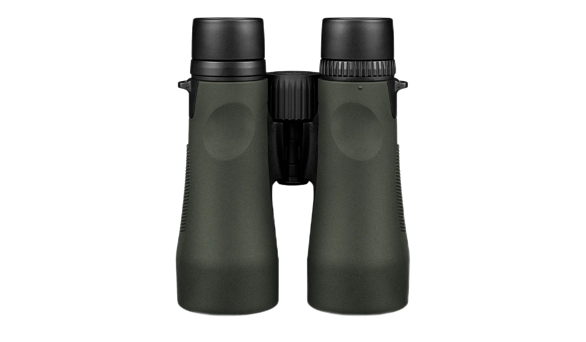
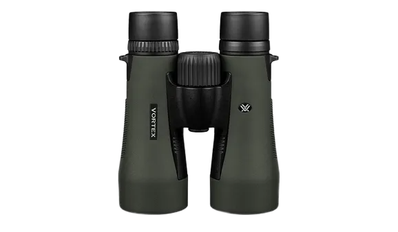
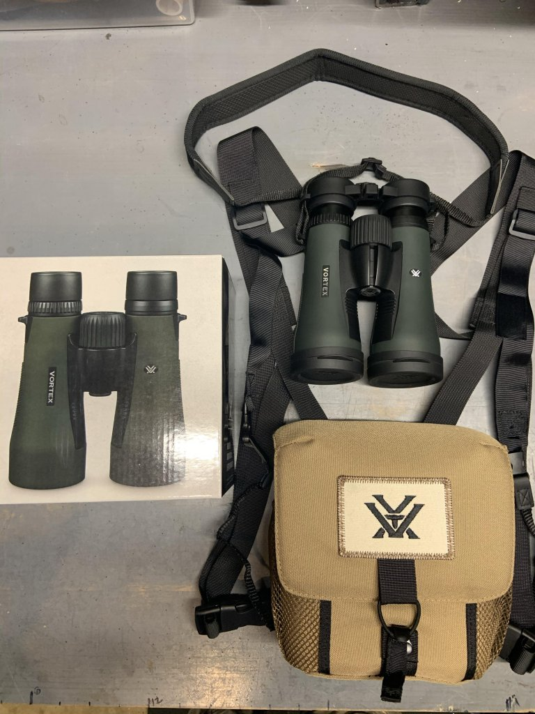

Бінокль Vortex Diamondback HD 10x50

Diamondback®️ HD значно перевершує співвідношення ціни та якості, пропонуючи прочну оптику, яка оптично перевершує ваш клас. Надійний і доступний бінокль, який за своїми оптичними характеристиками входить далеко за межі свого цінового сегмента. Корпус бінокля відрізняється підвищеною міцністю. У комплекті сумка-розвантажувач GlassPak для швидкого розвертання оптики в полевых умовах, чудовий захист і комфорт.


- Оптична система HD - оптимізована за допомогою вибраних скляних елементів для забезпечення виняткової роздільної здатності, усунення хроматичної аберації та виняткової точності передачі кольору, чіткості від краю до краю та пропускання світла.
- Повне багатошарове покриття - Покращує пропускання світла за допомогою кількох антиблікових покриттів на всіх поверхнях повітря-скло.
- Діелектричне покриття - Багатошарові призматичні покриття забезпечують яскраві, чіткі зображення з точним кольором.
- ArmorTek® - Надміцне, стійке до подряпин покриття захищає зовнішні лінзи від подряпин, масла та бруду.
Оптичні характеристики:

- Гумова броня - Забезпечує надійне, нековзке захоплення та міцний зовнішній захист.
- Водонепроникні ущільнювальні кільця - перешкоджають проникненню вологи, пилу та сміття в бінокль для надійної роботи в будь-якому середовищі.
- Ударостійкий - Міцна конструкція витримує віддачу та удар.
- Туманостійкий - Продувка аргоном запобігає внутрішньому запотіванню в широкому діапазоні температур.
- Призма даху - Цінується за більшу міцність і більш компактний розмір.
Конструктивні особливості:

- Регульовані наочники - Повертайте вгору та вниз для комфортного перегляду в окулярах або без них.
- Центральне колесо фокусування - Регулює фокус обох біноклів одночасно.
- Діоптрія - Регулює різницю в очах користувача. Розташований на правому окулярі.
- Штатив - адаптується. Сумісний із штативним адаптером, що дозволяє використовувати його на штативі чи кріпленні на вікні автомобіля.
Особливості зручності:
- GlassPak футляр для бінокля
- GlassPak корпусні ремені
- Комфортний шийний ремінь
- Прив’язані кришки для об’єктивів
- Серветка для очищення лінз